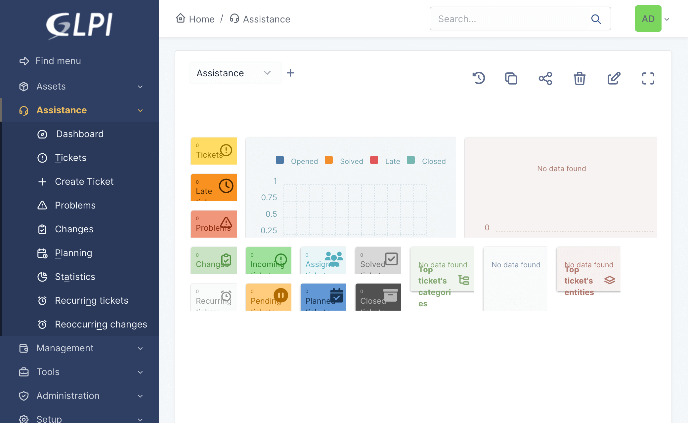
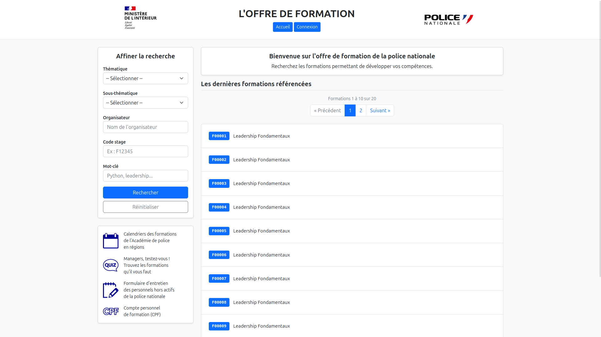
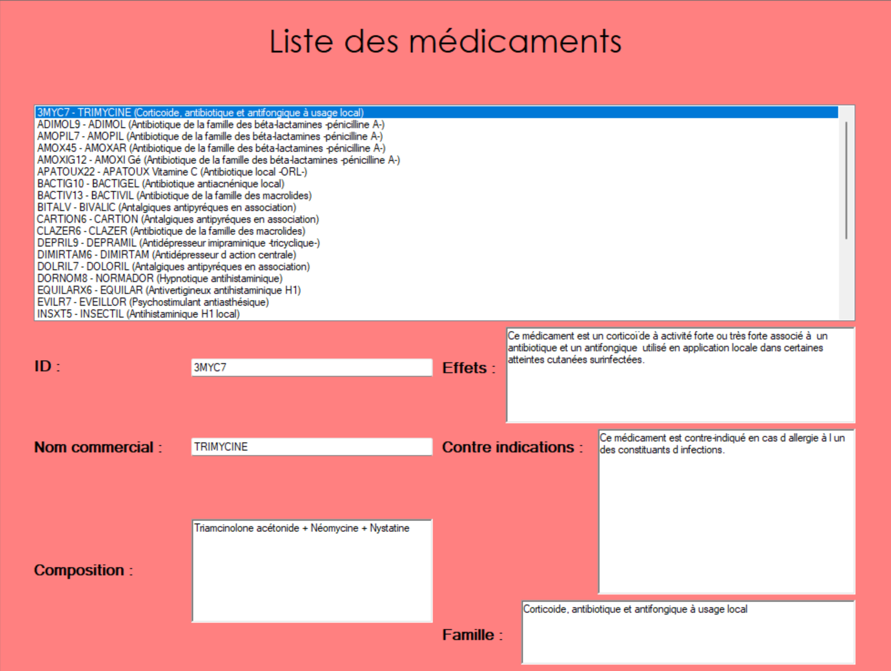
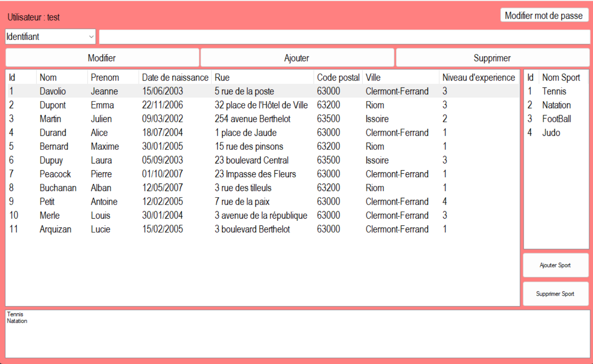
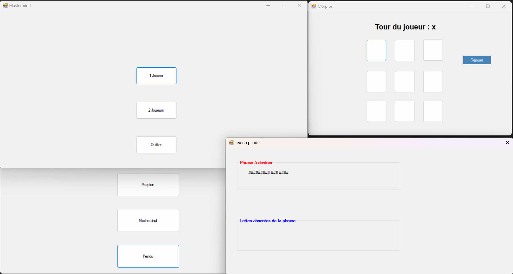
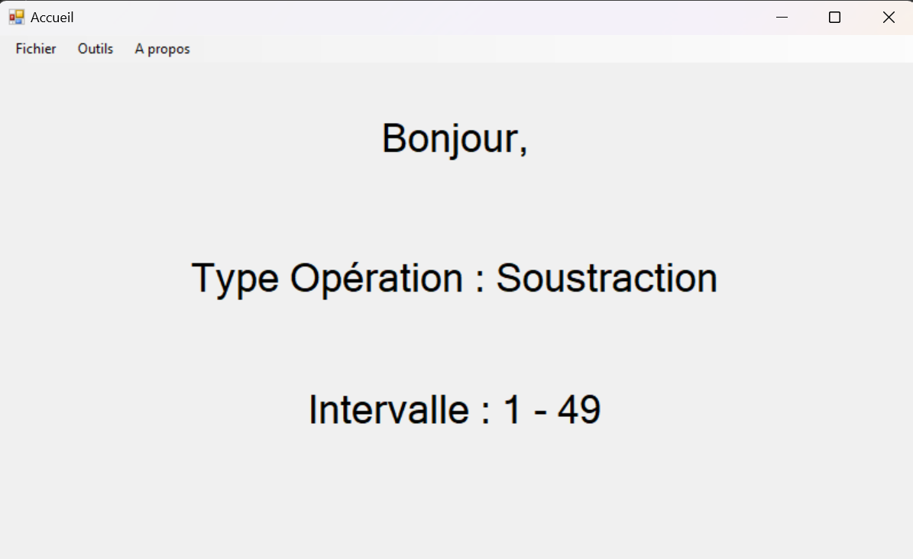
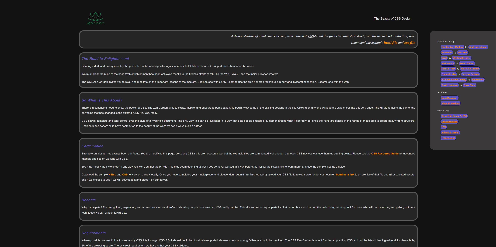
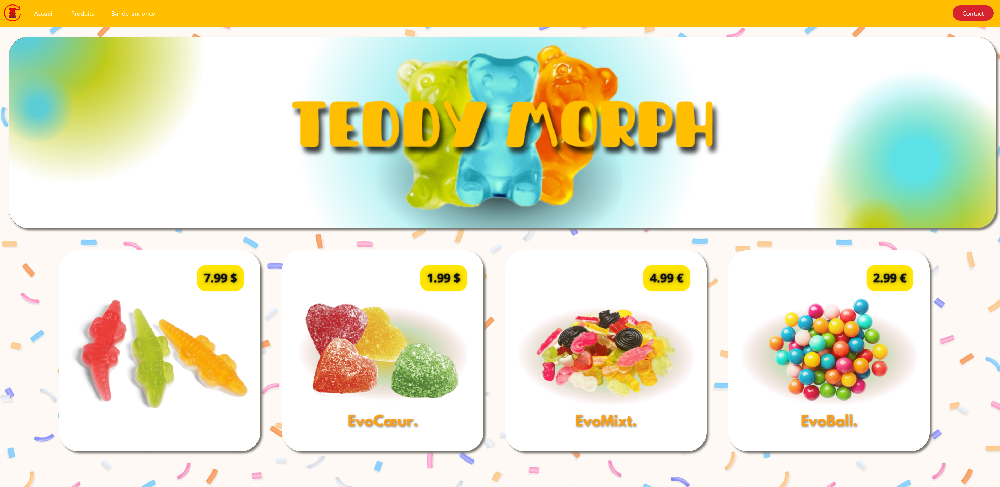
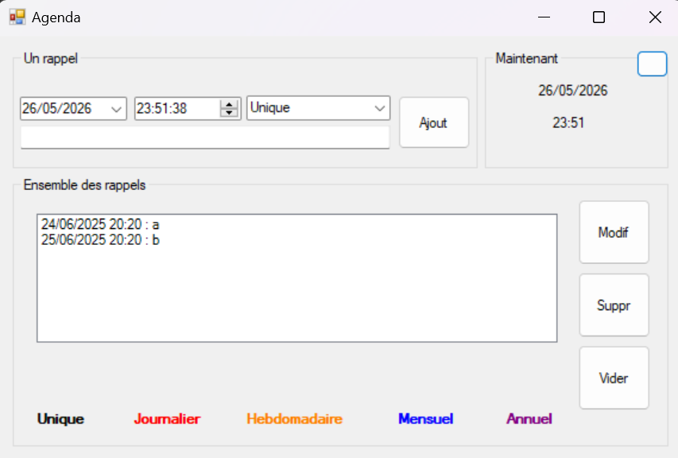

Mes réalisations

GLPI · 2025
Projet GLPI
Gestion du parc informatique.

Web · 2026
Offre de formation
Mise en place d'un catalogue de formations accessible via un site web, permettant de rechercher les formations selon différents critères et d'afficher les résultats sous forme de liste, avec la possibilité de consulter les détails d'une formation sélectionnée.

Web · 2025 - 2026
Site BloomSpirit
Site web qui référence des excursions au Japon.

Logiciel · 2026
ProjetGSB
Mise en place d'une application de gestion de médicaments.

Logiciel · 2025
APSportSIO
Application de gestion de sports et sportifs.

Logiciel · 2025
AP Jeux
Maintenance et correction d'applications de jeux : pendu, morpion et mastermind.

Logiciel · 2025
Logiciel Apprentissage calcul
Création d'une application permettant l'apprentissage des mathématiques (addition, soustraction, multiplication et division).

Web · 2024
CSS Zen Garden
Participation au développement et à la mise en forme du site web CSS Zen Garden.

Web · 2024
Site HTML "Publicité"
Création d'un site web pour présenter un produit et le vendre.

Logiciel · 2025
Application Agenda
Application permettant de gérer des évènements en rapport à des dates.